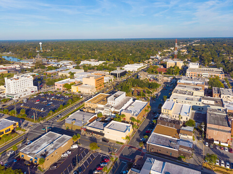

Community
Current Events
- Angel tree finds homes for adoptable pets, food and toys for community animals
- Summerfield man reportedly killed 600-pound pig because it squealed too much
- Grace Episcopal group raises money to help local women and children
- 'One of the fathers of the community:' Doug Oswald, former Ocala mayor, dies at 98
- New Ocala City Council members sworn in and already hard at work
- Silver Springs Holiday Event
- Holiday Craft Bazaar
Ocala to have another warm December week
Ocala residents can expect another December week with above average temperatures, according to Sunday's seven-day forecast from the National Weather Service in Jacksonville. Cold fronts have not been as strong this month following a cooler-than-average November, said Jason Hess, meteorologist with the NWS, and December temperatures in the Florida peninsula have been warmer than normal so far as cold temperatures are staying over the northern U.S. "It does look like eventually, that pattern will break down toward the end of the month," Hess said. "Whether it happens in time for Christmas or not, that is the question."
